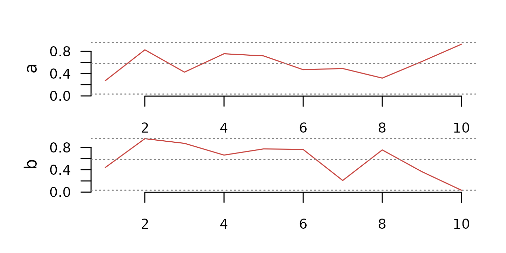
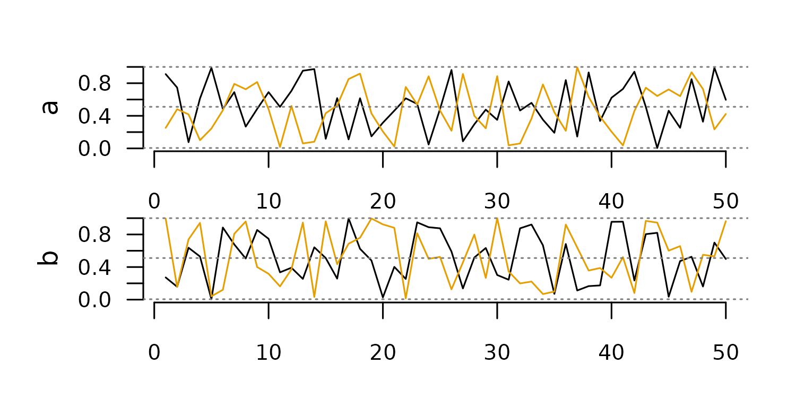
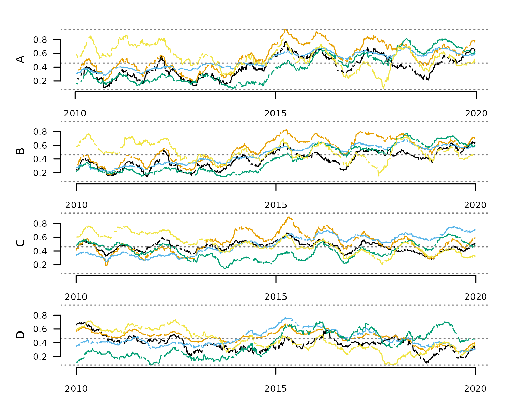
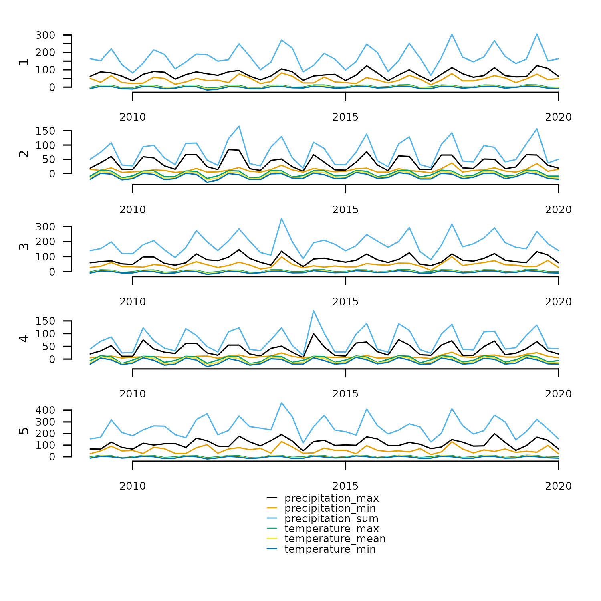
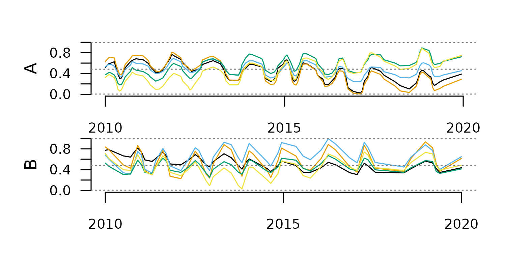
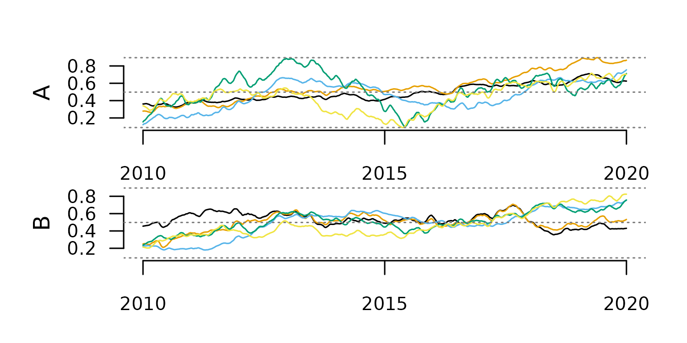
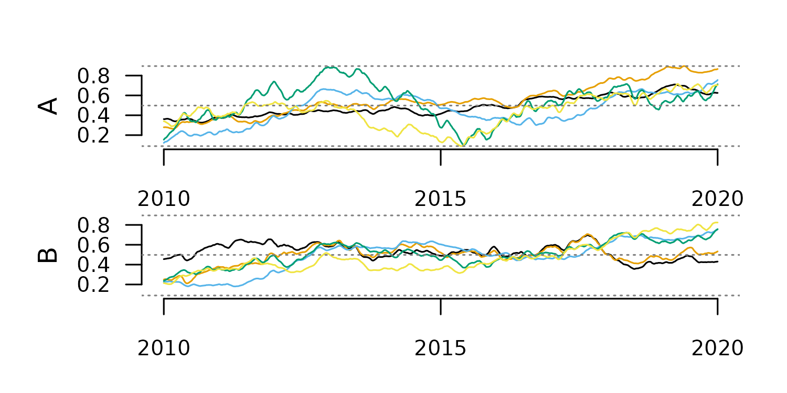
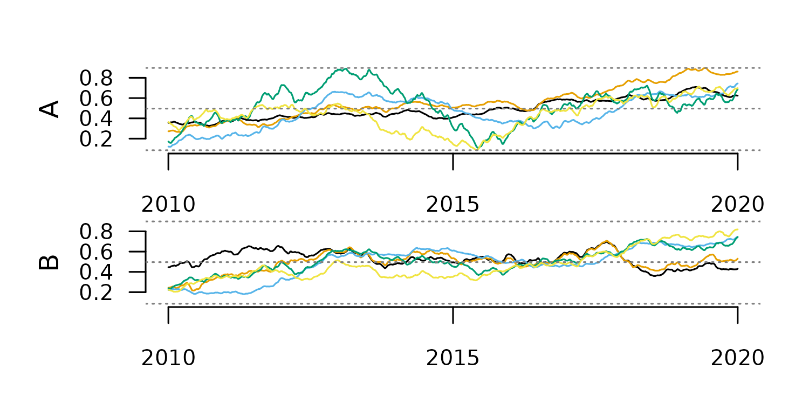
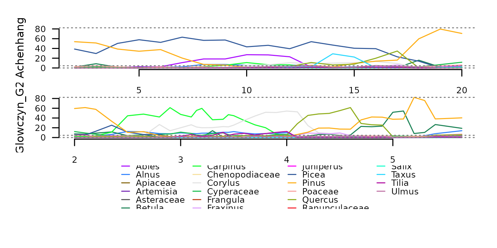

Summary
The R package distantia 2.0 introduces Time Series Lists
as obect to organize time series for dissimilarity analyses, and
provides a complete toolset to manage them.
This article describes Time Series Lists in detail, and showcases the most common data handling procedures enabled by the new functions included in the package.
Introduction to Time Series Lists
In this new version of distantia, groups of time series
are organized as named lists of zoo
objects. These lists are named Time Series Lists (TSL)
within the package, and are designed to facilitate the parallelization
of dissimilarity analyses.
TSL is not a class by choice, as the idea is keeping them as simple as possible to grant users the autonomy to create or modify them as needed.
Zoo Time Series
The R package zoo provides an S3 class of the same name
designed to handle observations ordered by an index. It supports various
index classes, such as Date, POSIXct, or even custom numeric or
character indices, and handles regular and irregular time series equally
well.
Other advantages of using zoo objects include a seamless intergration with base R methods, and built-in tools for alignment, merging, and subsetting.
Let’s take a look at a little zoo object.
library(distantia)
#> Loading required package: doFuture
#> Loading required package: foreach
#> Loading required package: future
z <- distantia::zoo_simulate(
name = "my_zoo",
cols = 3,
rows = 10,
time_range = c(
"2024-01-01",
"2024-12-31"
),
na_fraction = 0.1,
irregular = TRUE,
seed = 1
)
zoo_plot(x = z)
Zoo objects have two main components, a data matrix with the time series observations, and an index representing time or sample order.
The data matrix is extracted with zoo::coredata().
zoo::coredata(z)
#> a b c
#> 2024-01-01 0.2766156 NA 0.4311940
#> 2024-01-20 0.2757911 0.2576964 0.5035254
#> 2024-02-08 0.6195721 0.6088013 0.7032048
#> 2024-02-27 0.7287392 0.7720906 0.8115532
#> 2024-04-25 0.6145089 0.6955610 0.6016670
#> 2024-07-11 0.4504343 0.3641707 0.2375049
#> 2024-08-18 NA NA 0.2669233
#> 2024-09-06 0.3662741 0.3615319 0.2490074
#> 2024-11-03 0.3074425 0.3016022 0.4022756
#> 2024-12-11 0.3435016 0.1728781 0.3047951
#> attr(,"name")
#> [1] "my_zoo"
class(zoo::coredata(z))
#> [1] "matrix" "array"The core data of a zoo object can also be a vector when the time series is univariate.
However, this is frowned upon in
distantia, and these vectors should always be converted to
matrices.
x <- distantia::zoo_vector_to_matrix(x = x)
is.vector(zoo::coredata(x))
#> [1] FALSE
is.matrix(zoo::coredata(x))
#> [1] TRUEThe index of zoo time series is extracted with
zoo::index().
zoo::index(z)
#> [1] "2024-01-01" "2024-01-20" "2024-02-08" "2024-02-27" "2024-04-25"
#> [6] "2024-07-11" "2024-08-18" "2024-09-06" "2024-11-03" "2024-12-11"
class(zoo::index(z))
#> [1] "Date"The classes for zoo indices explicitly supported in
distantia are Date, POSIXct, and
numeric. The function distantia::zoo_time()
helps summarize the time features of a zoo object, including the time
class.
distantia::zoo_time(x = z)
#> name rows class units length resolution begin end
#> 1 my_zoo 10 Date days 345.7895 38.42105 2024-01-01 2024-12-11
#> keywords
#> 1 years, q....Additionally, in distantia all zoo objects are expected
to have the attribute name.
attributes(z)$name
#> [1] "my_zoo"This attribute, not part of the zoo class, is used to
facilitate plotting operations, and it is managed internally by
tsl_...() functions. There are several functions in
distantia to manage the names of zoo objects.
#reset zoo name
z <- distantia::zoo_name_set(
x = z,
name = "My_Zoo"
)
#get zoo name
distantia::zoo_name_get(x = z)
#> [1] "My_Zoo"
#clean zoo name
z <- distantia::zoo_name_clean(
x = z,
lowercase = TRUE
)
distantia::zoo_name_get(x = z)
#> [1] "my_zoo"This package comes with several functions to manipulate zoo objects:
-
zoo_name_set(),zoo_name_get()andzoo_name_clean(): handle the attribute “name”. -
zoo_time(): details of the zoo index. -
zoo_aggregate(): time aggregation of zoo objects. -
zoo_resample(): interpolation or extrapolation to a different time, or from irregular to regular time. -
zoo_smooth(): rolling-window smoothing. -
zoo_permute(): restricted permutation. -
zoo_vector_to_matrix()andzoo_to_tsl(): internal functions to facilitate handling zoo objects within TSLs.
Time Series Lists (TSL)
TSLs are named lists of zoo time series. The example below shows how to build a TSL from scratch with zoo objects. But this is not the most common or comfortable case, so please, visit the section Creating Time Series Lists to find out how to convert your data easily to TSL.
#create simple tsl
my_tsl <- list(
A = distantia::zoo_simulate(
cols = 4,
na_fraction = 0.2
),
B = distantia::zoo_simulate()
)
names(my_tsl)
#> [1] "A" "B"
class(my_tsl)
#> [1] "list"
#names of the zoo objects
lapply(X = my_tsl, FUN = distantia::zoo_name_get)
#> $A
#> [1] "A"
#>
#> $B
#> [1] "A"
#class of the objects within the list
lapply(X = my_tsl, FUN = class)
#> $A
#> [1] "zoo"
#>
#> $B
#> [1] "zoo"TSLs ready for dissimilarity analyses must follow several rules to ensure that dissimilarity analyses run without issues:
- The elements of the list or the zoo objects must be named.
- Time series names cannot be duplicated.
- The coredata of all zoo objects must be of class
matrix. - There cannot be NA, Inf, or NaN in the zoo objects.
- All zoo columns must be named.
- All zoo columns must be numeric.
- All zoo objects within the TSL must share at least one column name.
- The index of the zoo objects must be of the same class.
I understand these are way too many rules, but the functions
tsl_diagnose() and tsl_repair() are there to
help you forget about them. When applying tsl_diagnose() to
my_tsl we can see it has several issues.
distantia::tsl_diagnose(tsl = my_tsl)
#> distantia::tsl_diagnose(): issues in TSL structure:
#> ---------------------------------------------------
#>
#> - list and time series names must match and be unique: reset names with distantia::tsl_names_set().
#>
#> distantia::tsl_diagnose(): issues in TSL values:
#> --------------------------------------------------
#>
#> - there are NA, Inf, -Inf, or NaN cases in the time series: interpolate or remove them with distantia::tsl_handle_NA().From there, we can either follow the suggestions, or apply
tsl_repair() directly, as done below.
my_tsl <- distantia::tsl_repair(tsl = my_tsl)
#> distantia::tsl_repair(): repairs in TSL structure:
#> --------------------------------------------------
#>
#> - fixed naming issues.
#>
#> - removed exclusive columns not shared across time series.
#>
#> distantia::tsl_repair(): repairs in TSL values:
#> -------------------------------------------------
#>
#> - interpolated NA cases in zoo objects with distantia::tsl_handle_NA().
#> This function identifies the issues raised up by
tsl_diagnose() and repairs them when possible. If
tsl_diagnose() is run again, it should stay silent if
everything is ok.
distantia::tsl_diagnose(
tsl = my_tsl
)From this point, our TSL is ready to go!
distantia::tsl_plot(
tsl = my_tsl,
guide = FALSE
)Creating TSLs
The function tsl_initialize() (with the alias
tsl_init()) is designed to help transform several data
structures to Time Series List.
Long Data Frame to TSL
Long and tidy data frames are convenient structures to store
multivariate time series of a reasonable size. For example, the data
frame fagus_dynamics shown below has the column “name”
identifying separate time series, the column “time” with observation
dates, and three numeric columns with environmental observations.
head(fagus_dynamics)
#> name time evi rainfall temperature
#> 1 Spain 2001-01-01 0.1929 199.8 8.1
#> 5 Spain 2001-02-01 0.2423 50.6 7.8
#> 6 Spain 2001-03-01 0.2761 170.9 11.0
#> 7 Spain 2001-04-01 0.3961 62.7 10.4
#> 8 Spain 2001-05-01 0.4445 52.7 14.1
#> 9 Spain 2001-06-01 0.6434 23.1 17.6Transforming this data frame to TSL is quite straightforward:
tsl <- distantia::tsl_initialize(
x = fagus_dynamics,
name_column = "name",
time_column = "time"
)
#even shorter!
tsl <- distantia::tsl_init(
x = fagus_dynamics,
name = "name",
time = "time"
)
distantia::tsl_plot(
tsl = tsl
)Once manipulated and/or analyzed, a TSL can be converted back to data
frame with tsl_to_df().
df <- distantia::tsl_to_df(tsl = tsl)
head(df)
#> name time evi rainfall temperature
#> 1 Germany 2001-01-01 0.3539 68.6 2.1
#> 2 Germany 2001-02-01 0.2940 56.6 3.8
#> 3 Germany 2001-03-01 0.3453 128.2 6.8
#> 4 Germany 2001-04-01 0.3924 82.5 8.2
#> 5 Germany 2001-05-01 0.6880 32.7 15.9
#> 6 Germany 2001-06-01 0.6837 70.8 16.0Wide Data Frame to TSL
A wide data frame is a useful structure to store univariate time series observed in different places at the same times.
head(evi_wide)
#> time evi_Spain evi_Germany evi_Sweden
#> 1 2001-01-01 0.1929 0.3539 0.1827
#> 5 2001-02-01 0.2423 0.2940 0.1819
#> 6 2001-03-01 0.2761 0.3453 0.2155
#> 7 2001-04-01 0.3961 0.3924 0.2369
#> 8 2001-05-01 0.4445 0.6880 0.5192
#> 9 2001-06-01 0.6434 0.6837 0.5917When no name_column is provided,
tsl_initialize() assumes that each column is a univariate
time series.
tsl <- distantia::tsl_initialize(
x = evi_wide,
time_column = "time"
)
tsl_plot(
tsl = tsl,
guide = FALSE
)In this case, the column names of the univariate zoo objects will “x”.
distantia::tsl_colnames_get(tsl = tsl)
#> $evi_Spain
#> [1] "x"
#>
#> $evi_Germany
#> [1] "x"
#>
#> $evi_Sweden
#> [1] "x"This name can be reset as needed with
tsl_colnames_set().
tsl <- distantia::tsl_colnames_set(
tsl = tsl,
names = "evi"
)
distantia::tsl_colnames_get(tsl = tsl)
#> $evi_Spain
#> [1] "evi"
#>
#> $evi_Germany
#> [1] "evi"
#>
#> $evi_Sweden
#> [1] "evi"This TSL can be converted to data frame, but this time the result is a long data frame.
Vectors and Matrices to TSL
A list of numeric vectors can also be converted to TSL. In this case, the zoo index is a sequence of integers.
tsl <- distantia::tsl_initialize(
x = list(
a = runif(10),
b = runif(10)
)
)
distantia::tsl_plot(
tsl = tsl,
guide = FALSE
)
The same thing can be done with matrices as well.
tsl <- distantia::tsl_initialize(
x = list(
a = matrix(data = runif(100), ncol = 2, nrow = 50),
b = matrix(data = runif(100), ncol = 2, nrow = 50)
)
)
distantia::tsl_plot(
tsl = tsl,
guide = FALSE
)
The TSL Toolset
The functions in distantia to handle TSLs are named
after the pattern tsl_...(). Some of these functions are
designed to explore and better understand your TSLs, while others are
designed to manipulate and transform them to facilitate dissimilarity
analyses.
This section offers a complete overview of these functions and their applications.
Parallelization Setup
The functions to manage TSLs are a bunch of
lapply in a trench coat. Most use
future.apply::future_lapply(), a parallelized version of
lapply from the future.apply package, and a
few combine foreach::foreach() with
doFuture::%iterator% in shameless parallelized loops.
As such, they all support a parallelization backend provided by the
future package, as shown below. However, take in mind that
parallelization is only worth it for very large datasets.
library(future)
library(parallelly)
future::plan(
future::multisession,
workers = parallelly::availableCores() - 1
)They also support progress bars via the progressr
package. However, this option, commented in the code below, does not
work in Rmarkdown.
#progress bar (does not work in Rmarkdown)
#progressr::handlers(global = TRUE)Explore TSLs
This section showcases all tools available in distantia
to better understand our Time Series Lists. Logically, the section
starts with distantia::tsl_simulate(), a function that has
nothing to do with such purpose.
tsl <- distantia::tsl_simulate(
n = 4,
cols = 5,
rows = 1000,
time_range = c("2010-01-01", "2020-01-01"),
data_range = c(0, 1),
seasons = 10,
na_fraction = 0.1,
irregular = TRUE
)
tsl_plot(
tsl = tsl,
guide = FALSE
)
The simpler tools to explore TSLs are focused on simpler things, like extracting TSL names and dimensions.
#time series names
distantia::tsl_names_get(tsl = tsl)
#> A B C D
#> "A" "B" "C" "D"
#column names
distantia::tsl_colnames_get(tsl = tsl)
#> $A
#> [1] "a" "b" "c" "d" "e"
#>
#> $B
#> [1] "a" "b" "c" "d" "e"
#>
#> $C
#> [1] "a" "b" "c" "d" "e"
#>
#> $D
#> [1] "a" "b" "c" "d" "e"
#number of columns
distantia::tsl_ncol(tsl = tsl)
#> $A
#> [1] 5
#>
#> $B
#> [1] 5
#>
#> $C
#> [1] 5
#>
#> $D
#> [1] 5
#number of rows
distantia::tsl_nrow(tsl = tsl)
#> $A
#> [1] 895
#>
#> $B
#> [1] 828
#>
#> $C
#> [1] 948
#>
#> $D
#> [1] 755The function tsl_time() summarizes the time features of
all time series in a TSL.
distantia::tsl_time(tsl = tsl)
#> name rows class units length resolution begin end keywords
#> 1 A 895 Date days 3624.449 4.054194 2010-01-15 2019-12-18 years, q....
#> 2 B 828 Date days 3646.485 4.409293 2010-01-02 2019-12-27 decades,....
#> 3 C 948 Date days 3638.513 3.842147 2010-01-05 2019-12-23 years, q....
#> 4 D 755 Date days 3643.532 4.832271 2010-01-04 2019-12-27 years, q....The function tsl_stats(), on the other hand, computes
stats by time series and variable to summarize the TSL values.
df_stats <- distantia::tsl_stats(
tsl = tsl,
lags = 1 #temporal autocorrelation lag
)
df_stats
#> name variable NA_count min q1 median q3 max
#> 1 A a 95 0.09800680 0.2854132 0.3849914 0.5370719 0.7674207
#> 2 B a 79 0.13872269 0.3007013 0.3942495 0.4940126 0.6487662
#> 3 C a 109 0.27719376 0.4101711 0.4665759 0.5036950 0.6624000
#> 4 D a 84 0.10229087 0.3040870 0.3835407 0.4393233 0.6986380
#> 5 A b 92 0.18770587 0.4184237 0.5425625 0.7183262 0.9493957
#> 6 B b 91 0.17210765 0.3897937 0.5482020 0.6652081 0.8337273
#> 7 C b 82 0.18745969 0.4215132 0.5207325 0.5916581 0.8933747
#> 8 D b 74 0.27306583 0.4311374 0.4926373 0.5442130 0.6738263
#> 9 A c 86 0.27818993 0.3897210 0.5338184 0.6072574 0.6982036
#> 10 B c 72 0.20903477 0.3370288 0.5106152 0.5814762 0.6790678
#> 11 C c 84 0.24096347 0.3557717 0.5255553 0.6063718 0.7548251
#> 12 D c 86 0.26436389 0.3780786 0.4232056 0.5317723 0.7708494
#> 13 A d 74 0.09104849 0.2030033 0.3816940 0.5920768 0.8119424
#> 14 B d 81 0.14081870 0.2190328 0.3864535 0.5775882 0.7702173
#> 15 C d 93 0.14189279 0.3069329 0.3949073 0.4852792 0.6477854
#> 16 D d 58 0.07457297 0.2129388 0.3626525 0.5392032 0.7086870
#> 17 A e 100 0.09011920 0.4445964 0.5367143 0.6687842 0.8646269
#> 18 B e 91 0.15213822 0.4179866 0.4870679 0.6072825 0.7692504
#> 19 C e 106 0.20399463 0.3968680 0.4878493 0.5956665 0.7596875
#> 20 D e 75 0.08108168 0.3135596 0.3926041 0.5660621 0.7388785
#> mean sd range iq_range skewness kurtosis ac_lag_1
#> 1 0.4044377 0.15283312 0.6694139 0.25165869 0.135796703 -1.1614189 0.9923180
#> 2 0.3928407 0.12114009 0.5100435 0.19331131 -0.053857813 -1.1259414 0.9907480
#> 3 0.4597313 0.07042273 0.3852063 0.09352395 0.005461071 -0.4426902 0.9925611
#> 4 0.3795733 0.11119890 0.5963471 0.13523637 0.300669286 0.2207331 0.9857942
#> 5 0.5589036 0.18735525 0.7616898 0.29990253 0.009134059 -1.2069282 0.9956180
#> 6 0.5299596 0.16545720 0.6616196 0.27541447 -0.175211756 -1.2978824 0.9963093
#> 7 0.5136854 0.14010779 0.7059150 0.17014492 0.169843739 -0.5512491 0.9962088
#> 8 0.4833612 0.08858408 0.4007605 0.11307562 -0.404070295 -0.5451592 0.9947963
#> 9 0.5011489 0.11874399 0.4200137 0.21753637 -0.089411492 -1.6131048 0.9967500
#> 10 0.4623944 0.13293121 0.4700330 0.24444742 -0.216507414 -1.5854223 0.9975072
#> 11 0.4942972 0.13852011 0.5138616 0.25060008 -0.068798985 -1.4743774 0.9969533
#> 12 0.4593613 0.11521512 0.5064855 0.15369375 0.793200483 -0.3362831 0.9952735
#> 13 0.4019948 0.20923281 0.7208939 0.38907341 0.294977793 -1.4117867 0.9971173
#> 14 0.4008981 0.18935485 0.6293986 0.35855547 0.248743033 -1.5865958 0.9975460
#> 15 0.3961837 0.11144364 0.5058926 0.17834624 0.031279206 -0.9949715 0.9961713
#> 16 0.3773762 0.17764114 0.6341141 0.32626441 0.155830203 -1.4716906 0.9955135
#> 17 0.5404382 0.15653877 0.7745077 0.22418779 -0.086928464 -0.7879823 0.9936674
#> 18 0.5047805 0.12378891 0.6171122 0.18929582 0.023233593 -0.9391389 0.9928874
#> 19 0.4924585 0.12809646 0.5556929 0.19879847 0.138175689 -1.0669619 0.9964616
#> 20 0.4213054 0.15606866 0.6577968 0.25250251 0.064335980 -1.0802679 0.9962414Handle NA Cases
The dissimilarity analyses implemented in version 2.0 of
distantia do not support NA cases in time
series lists. There are two alternate workflows to handle NA cases in
time series list.
The first uses tsl_count_NA() and
tsl_handle_NA(). The former function converts Inf and NaN
to NA and counts NA cases in each time series, while the latter either
omits or imputes NA cases via zoo::na.approx().
#count NA
distantia::tsl_count_NA(tsl = tsl)
#> $A
#> [1] 447
#>
#> $B
#> [1] 414
#>
#> $C
#> [1] 474
#>
#> $D
#> [1] 377
#impute NA cases
tsl_notNA <- distantia::tsl_handle_NA(
tsl = tsl,
na_action = "impute"
)
#re-count
distantia::tsl_count_NA(tsl = tsl_notNA)
#> $A
#> [1] 0
#>
#> $B
#> [1] 0
#>
#> $C
#> [1] 0
#>
#> $D
#> [1] 0The second workflow involves the functions
tsl_diagnose() and tsl_repair(), is more
general because it addresses other potential issues at once.
#diagnose issues with NA values
distantia::tsl_diagnose(tsl = tsl)
#>
#> distantia::tsl_diagnose(): issues in TSL values:
#> --------------------------------------------------
#>
#> - there are NA, Inf, -Inf, or NaN cases in the time series: interpolate or remove them with distantia::tsl_handle_NA().
#impute NA cases
tsl <- tsl_repair(tsl = tsl)
#>
#> distantia::tsl_repair(): repairs in TSL values:
#> -------------------------------------------------
#>
#> - interpolated NA cases in zoo objects with distantia::tsl_handle_NA().
#>
#re-diagnose to check result
distantia::tsl_diagnose(tsl = tsl)Subsetting
The function tsl_subset() helps focus on particular
regions of a time series list. Additionally, by default this
function returns the numeric columns that are shared across all time
series in a TSL.
tsl_new <- distantia::tsl_subset(
tsl = tsl,
names = c("A", "C", "D"),
colnames = c("a", "b"),
time = c("2014-01-01", "2018-01-01"),
numeric_cols = TRUE,
shared_cols = TRUE
)
distantia::tsl_plot(
tsl = tsl_new
)
The function tsl_burst() transforms a multivariate TSL
into a univariate TSL by creating a new zoo object from each column of
the original zoo objects. This function helps apply dissimilarity
analysis between individual variables in multivariate time series.
#burst multivariate time series to univariate
tsl_univariate <- distantia::tsl_burst(
tsl = tsl_new
)
#check new time series names
distantia::tsl_names_get(tsl = tsl_univariate)
#> A__a A__b C__a C__b D__a D__b
#> "A__a" "A__b" "C__a" "C__b" "D__a" "D__b"
#check new column names
distantia::tsl_colnames_get(tsl = tsl_univariate)
#> $A__a
#> [1] "x"
#>
#> $A__b
#> [1] "x"
#>
#> $C__a
#> [1] "x"
#>
#> $C__b
#> [1] "x"
#>
#> $D__a
#> [1] "x"
#>
#> $D__b
#> [1] "x"
#plot univariate time series
distantia::tsl_plot(
tsl = tsl_univariate,
guide = FALSE
)
Aggregation
Aggregation reduces time series frequency (a.k.a downsampling) by summarizing multiple data points into a single value over a specified time interval. It results in a reduction in the number of samples, smooths noise out, can transform irregular time series into regular, and can generate entirely new time series depending on the aggregation stats. On the other hand, it obscures fine grain detail and alters statistical properties such as variance and temporal autocorrelation.
In distantia, this operation is supported by the
function tsl_aggregate(), with two arguments:
-
new_time: time vector or keyword defining time intervals to aggregate over. -
f: aggregation function summarizing observations over aggregation time intervals.
The code below illustrates this function’s usage to compute yearly
temperature and precipitation indicators from the monthly observations
in the dataset honeycomb_climate.
tsl <- distantia::tsl_init(
x = distantia::honeycomb_climate,
name = "cell",
time = "time"
) |>
tsl_subset(
names = 1:5 #subset first five elements
)
distantia::tsl_plot(
tsl = tsl
)
The easiest way to define aggregation intervals in
distantia is to use a keyword. The function
tsl_time() returns the supported keywords for a given
TSL.
df_time <- distantia::tsl_time(
tsl = tsl,
keywords = "aggregate"
)
df_time$keywords |>
unlist() |>
unique()
#> [1] "decades" "years" "quarters"Let’s focus on “quarters” for the rest of the example.
interval <- "quarters"The code below subsets the column “temperature” in tsl,
aggregates by computing the minimum, maximum, and mean per quarter, and
adds a suffix to each new aggregated column.
#subset temperature column
tsl_temperature <- distantia::tsl_subset(
tsl = tsl,
colnames = "temperature"
)
#compute stats: minimum, maximum, and mean
tsl_temperature_min <- distantia::tsl_aggregate(
tsl = tsl_temperature,
new_time = interval,
f = min
) |>
distantia::tsl_colnames_suffix(
suffix = "_min" #set suffix for aggregated column
)
tsl_temperature_max <- distantia::tsl_aggregate(
tsl = tsl_temperature,
new_time = interval,
f = max
) |>
distantia::tsl_colnames_suffix(
suffix = "_max"
)
tsl_temperature_mean <- distantia::tsl_aggregate(
tsl = tsl_temperature,
new_time = interval,
f = mean
) |>
distantia::tsl_colnames_suffix(
suffix = "_mean"
)Similar steps can be followed to process the variable “precipitation”.
#subset temperature column
tsl_precipitation <- distantia::tsl_subset(
tsl = tsl,
colnames = "precipitation"
)
#compute stats: minimum, maximum, and mean
tsl_precipitation_sum <- distantia::tsl_aggregate(
tsl = tsl_precipitation,
new_time = interval,
f = sum
) |>
distantia::tsl_colnames_suffix(
suffix = "_sum" #set suffix for aggregated column
)
tsl_precipitation_max <- distantia::tsl_aggregate(
tsl = tsl_precipitation,
new_time = interval,
f = max
) |>
distantia::tsl_colnames_suffix(
suffix = "_max"
)
tsl_precipitation_min <- distantia::tsl_aggregate(
tsl = tsl_precipitation,
new_time = interval,
f = min
) |>
distantia::tsl_colnames_suffix(
suffix = "_min"
)Finally, we join all new TSLs together to examine the result.
tsl_climate_stats <- distantia::tsl_join(
tsl_temperature_min,
tsl_temperature_max,
tsl_temperature_mean,
tsl_precipitation_sum,
tsl_precipitation_max,
tsl_precipitation_min
)
distantia::tsl_plot(
tsl = tsl_climate_stats,
ylim = "relative"
)
Resampling
Resampling is a model-based method to change the frequency of a time series via interpolation. It is useful to align time series that are irregular or have different resolutions. It is important to take in mind that resampling to a frequency much higher than the original will definitely result in interpolation artifacts and distorted time series.
The code below creates two irregular time series with different number of rows.
tsl <- distantia::tsl_init(
x = list(
A = zoo_simulate(rows = 100, seasons = 10),
B = zoo_simulate(rows = 50, seasons = 10)
)
)
distantia::tsl_plot(
tsl = tsl,
guide = FALSE
)
The time features of this TSL show clear differences in frequency between these time series.
distantia::tsl_time(tsl = tsl)[
,
c("name", "rows", "resolution", "begin", "end")
]
#> name rows resolution begin end
#> 1 A 100 36.70352 2010-01-01 2019-12-13
#> 2 B 50 74.53061 2010-01-01 2020-01-01By default, if the argument new_time is omitted, a
linear model (computed via zoo:::na.approx()) is used to
resample the TSL to its average resolution over the intersection of all
its time ranges.
tsl_resampled <- distantia::tsl_resample(
tsl = tsl
)
distantia::tsl_time(tsl = tsl_resampled)[
,
c("name", "rows", "resolution", "begin", "end")
]
#> name rows resolution begin end
#> 1 A 75 49.10335 2010-01-01 2019-12-13
#> 2 B 75 49.10335 2010-01-01 2019-12-13
distantia::tsl_plot(
tsl = tsl_resampled,
guide = FALSE
)
Otherwise, a keyword can be used to define the resampling frequency.
Again, we can find valid keywords using tsl_time(), but
replacing “aggregate” with “resample” in the argument
keywords.
df <- distantia::tsl_time(
tsl = tsl,
keywords = "resample"
)
df$keywords |>
unlist() |>
unique()
#> [1] "years" "quarters" "months" "weeks"
tsl_resampled <- distantia::tsl_resample(
tsl = tsl,
new_time = "weeks",
method = "loess"
)
#> Warning: distantia::zoo_resample(): The time intervals of 'new_time' and 'x'
#> differ in one order of magnitude or more. The output time series might be
#> highly distorted.
#> Warning: UNRELIABLE VALUE: One of the 'future.apply' iterations
#> ('future_lapply-1') unexpectedly generated random numbers without declaring so.
#> There is a risk that those random numbers are not statistically sound and the
#> overall results might be invalid. To fix this, specify 'future.seed=TRUE'. This
#> ensures that proper, parallel-safe random numbers are produced via the
#> L'Ecuyer-CMRG method. To disable this check, use 'future.seed = NULL', or set
#> option 'future.rng.onMisuse' to "ignore".
tsl_time(tsl = tsl_resampled)[
,
c("name", "rows", "resolution", "begin", "end")
]
#> name rows resolution begin end
#> 1 A 519 7 2010-01-03 2019-12-08
#> 2 B 522 7 2010-01-03 2019-12-29
distantia::tsl_plot(
tsl = tsl_resampled,
guide = FALSE
)
Smoothing
Time series smoothing is used to mitigate noise in high-frequency time series, or to highlight general trends rather than fine-grain details.
The function tsl_smooth() implements two smoothing
methods: rolling-window and exponential.
To check how these methods work we first need a long and noisy TSL.
tsl <- distantia::tsl_simulate(
rows = 1000,
irregular = FALSE
)
distantia::tsl_plot(
tsl = tsl,
guide = FALSE
)
Rolling-Window Smoothing
This method computes a statistic over a fixed-width window of consecutive cases and replaces each central value with the computed statistic. It should not be applied to highly irregular time series, as it ignores time distance.
The code below applies this method with two different window sizes.
#smoothing with window 100
tsl_smooth_100 <- tsl_smooth(
tsl = tsl,
window = 100,
f = mean
)
distantia::tsl_plot(
tsl = tsl_smooth_100,
guide = FALSE
)
#smoothing with window 10
tsl_smooth_10 <- tsl_smooth(
tsl = tsl,
window = 10,
f = mean
)
distantia::tsl_plot(
tsl = tsl_smooth_10,
guide = FALSE
) 
The window size determines the smoothing scale, and with that, the type
of trend highlighted in the smoothing results.

The window size determines the smoothing scale, and with that, the type
of trend highlighted in the smoothing results.
Exponential Smoothing
This method generates each new value as the weighted average of the
current value and past smoothed values. This weight is defined by the
argument alpha in tsl_smooth().
#smoothing with alpha 0.2
tsl_smooth_exp_0.2 <- tsl_smooth(
tsl = tsl,
alpha = 0.2
)
distantia::tsl_plot(
tsl = tsl_smooth_exp_0.2,
guide = FALSE
)
#smoothing with alpha 0.8
tsl_smooth_exp_0.8 <- tsl_smooth(
tsl = tsl,
alpha = 0.8
)
distantia::tsl_plot(
tsl = tsl_smooth_exp_0.8,
guide = FALSE
) Alpha values closer to zero produce smoother results, as the plots above show.
Transformations
The function tsl_transform() applies a function
f to transform the values of a TSL. The names of the
available f functions can be listed with
f_list().
distantia::f_list()
#> [1] "f_binary" "f_clr" "f_detrend_difference"
#> [4] "f_detrend_linear" "f_detrend_poly" "f_hellinger"
#> [7] "f_log" "f_percent" "f_proportion"
#> [10] "f_proportion_sqrt" "f_rescale_global" "f_rescale_local"
#> [13] "f_scale_global" "f_scale_local" "f_trend_linear"
#> [16] "f_trend_poly"Scale Adjustments
Scaling and centering multivariate time series is essential in dynamic time warping to ensure all variables contribute equally, regardless of their range or units.
For example, the dataset fagus_dynamics has variables in
different units.
tsl <- distantia::tsl_init(
x = distantia::fagus_dynamics,
name = "name",
time = "time"
)
distantia::tsl_plot(
tsl = tsl
)
Due to the differences in magnitude between variables, a dynamic time
warping analysis will focus on rainfall disproportionately,
biasing the results.
To solve this issue, the package distantia implements
two flavors of scaling and/or centering:
- Local: each variable is scaled and/or centered independently by time series.
- Global: each variable is scaled and/or centering using its mean and standard deviation across all time series.
#local scaling
tsl_local_scaling <- distantia::tsl_transform(
tsl = tsl,
f = distantia::f_scale_local
)
#global scaling
tsl_global_scaling <- distantia::tsl_transform(
tsl = tsl,
f = distantia::f_scale_global
)The stats of both operations show that the global one preserves variable offsets between locations, while the local one shows an average 0 and standard deviation 1 across all variables.
stats_cols <- c("name", "variable", "mean", "sd")
#stats of local scaling
distantia::tsl_stats(
tsl = tsl_local_scaling
)[, stats_cols]
#> name variable mean sd
#> 1 Germany evi -0.00000000000000006831308 1
#> 2 Spain evi -0.00000000000000002052254 1
#> 3 Sweden evi 0.00000000000000007098864 1
#> 4 Germany rainfall -0.00000000000000004628439 1
#> 5 Spain rainfall -0.00000000000000014522160 1
#> 6 Sweden rainfall 0.00000000000000021712177 1
#> 7 Germany temperature -0.00000000000000010904564 1
#> 8 Spain temperature 0.00000000000000006240186 1
#> 9 Sweden temperature 0.00000000000000004371794 1
#stats of global scaling
distantia::tsl_stats(
tsl = tsl_global_scaling
)[, stats_cols]
#> name variable mean sd
#> 1 Germany evi 0.274946362 0.8814083
#> 2 Spain evi -0.198553830 0.7030354
#> 3 Sweden evi -0.076392533 1.2715132
#> 4 Germany rainfall -0.322755553 0.7018733
#> 5 Spain rainfall 0.493472218 1.2122159
#> 6 Sweden rainfall -0.170716665 0.8176955
#> 7 Germany temperature -0.009510512 1.0589824
#> 8 Spain temperature 0.360302107 0.7534701
#> 9 Sweden temperature -0.350791594 1.0324738The functions f_rescale_local and
f_rescale_global work under the same principle to rescale
variable ranges. By default, these functions rescale all time series
between 0 and 1, but the arguments new_min and
new_max can receive numeric vectors to set different ranges
for different variables.
tsl_local_rescaling <- tsl_transform(
tsl = tsl,
f = f_rescale_local,
new_min = 0, #same for all variables
new_max = c(0, 100, 10)
)
tsl_global_rescaling <- tsl_transform(
tsl = tsl,
f = f_rescale_global,
new_min = 0,
new_max = c(0, 100, 10)
)The stats below show the results of the local and global rescaling.
stats_cols <- c("name", "variable", "min", "max")
distantia::tsl_stats(
tsl = tsl_local_rescaling
)[, stats_cols]
#> name variable min max
#> 1 Germany evi 0 0
#> 2 Spain evi 0 0
#> 3 Sweden evi 0 0
#> 4 Germany rainfall 0 100
#> 5 Spain rainfall 0 100
#> 6 Sweden rainfall 0 100
#> 7 Germany temperature 0 10
#> 8 Spain temperature 0 10
#> 9 Sweden temperature 0 10
distantia::tsl_stats(
tsl = tsl_global_rescaling
)[, stats_cols]
#> name variable min max
#> 1 Germany evi 0.03304993 0.8519938
#> 2 Spain evi 0.16944079 0.7209915
#> 3 Sweden evi 0.00000000 1.0000000
#> 4 Germany rainfall 0.00000000 0.6596244
#> 5 Spain rainfall 0.03615023 1.0000000
#> 6 Sweden rainfall 0.02206573 0.8732394
#> 7 Germany temperature 0.10035842 1.0000000
#> 8 Spain temperature 0.32974910 0.9462366
#> 9 Sweden temperature 0.00000000 0.8853047Trend Adjustments
Removing trends in time series before applying dynamic time warping may help prevents inflated dissimilarity scores caused by non-stationary components. Detrending also ensures that the alignment generated by dynamic time warping focuses on meaningful shape features rather than being distorted by long-term trends.
The transformation function f_trend_linear transforms
time series into their linear trend to help identify whether a time
series needs detrending or not.
The example below applies this function to the
cities_temperature dataset.
#loading cities_temperature as tsl
tsl <- distantia::tsl_init(
x = distantia::cities_temperature,
name = "name",
time = "time"
)
#computing linear trends
tsl_trend <- distantia::tsl_transform(
tsl = tsl,
f = distantia::f_trend_linear
)
#plotting linear trends
tsl_plot(
tsl = tsl_trend,
columns = 2,
guide = FALSE,
line_color = "red4",
line_width = 1.5
)We can now compute the stats of these linear trends to identify the cities with a steeper long-term temperature change.
#compute stats of linear trends
df_stats <- distantia::tsl_stats(
tsl = tsl_trend,
lags = 0
)
#arrange from higher to lower range
df_stats[
order(df_stats$range, decreasing = TRUE),
c("name", "range")
]
#> name range
#> 15 Moscow 1.6821989
#> 12 London 1.3864875
#> 19 Shanghai 1.3791695
#> 16 Paris 1.3286522
#> 6 Istanbul 1.3026069
#> 3 Cairo 1.2096175
#> 20 Tokyo 1.0892597
#> 8 Karachi 1.0320425
#> 18 São Paulo 0.8453958
#> 13 Los Angeles 0.8322052
#> 17 Rio De Janeiro 0.7802845
#> 10 Lagos 0.7670465
#> 9 Kinshasa 0.6908596
#> 7 Jakarta 0.6667040
#> 2 Bogotá 0.4577014
#> 5 Ho Chi Minh City 0.3983325
#> 14 Manila 0.3216708
#> 1 Bangkok 0.2431807
#> 11 Lima 0.2421891
#> 4 Dhaka 0.2317552Now that we identified the issue, the function
f_detrend_linear helps remove these temporal trends from
the data.
tsl_detrended <- distantia::tsl_transform(
tsl = tsl,
f = distantia::f_detrend_linear
)The code below applies f_trend_linear again to
demonstrate that the linear detrending worked as expected.
tsl_trend <- distantia::tsl_transform(
tsl = tsl_detrended,
f = distantia::f_trend_linear
)
df_stats <- distantia::tsl_stats(
tsl = tsl_trend,
lags = 0
)
df_stats[, c("name", "range")]
#> name range
#> 1 Bangkok 0.000000000000000328592658
#> 2 Bogotá 0.000000000000000484878289
#> 3 Cairo 0.000000000000000943646582
#> 4 Dhaka 0.000000000000000329773971
#> 5 Ho Chi Minh City 0.000000000000000890841633
#> 6 Istanbul 0.000000000000000808987093
#> 7 Jakarta 0.000000000000001206220863
#> 8 Karachi 0.000000000000000581163990
#> 9 Kinshasa 0.000000000000002226721698
#> 10 Lagos 0.000000000000001024499755
#> 11 Lima 0.000000000000000709047629
#> 12 London 0.000000000000000614810456
#> 13 Los Angeles 0.000000000000000469843877
#> 14 Manila 0.000000000000000006671831
#> 15 Moscow 0.000000000000000851634434
#> 16 Paris 0.000000000000000317550377
#> 17 Rio De Janeiro 0.000000000000000841054716
#> 18 São Paulo 0.000000000000000464026082
#> 19 Shanghai 0.000000000000000087755817
#> 20 Tokyo 0.000000000000001516265533Compositional Normalization
The distantia package offers several transformations for
compositional data:
-
f_percent: percentages. -
f_proportion: proportions. -
f_proportion_sqrt: square root of proportions -
f_hellinger: transforms to proportion and applies Hellinger transformation. -
f_clr: centered log-ratio. -
f_log: logarithm transformation. -
f_binary: transform continuous data into discrete events.
The example below shows the application of several of these
transformation on the counts dataset eemian_pollen.
tsl_counts <- distantia::tsl_init(
x = distantia::eemian_pollen,
name = "name",
time = "time"
) |>
distantia::tsl_subset(
names = c(1, 2)
)
#> distantia::utils_prepare_time(): duplicated time indices in 'Krumbach_I':
#> - value 6.8 replaced with 6.825.
distantia::tsl_plot(
tsl = tsl_counts,
guide_columns = 4
) Transformation to percentages with
Transformation to percentages with f_percent.
tsl_percent <- distantia::tsl_transform(
tsl = tsl_counts,
f = distantia::f_percent
)
distantia::tsl_plot(
tsl = tsl_percent,
guide_columns = 4
)
The function f_binary helps transform continuous data into
discrete events. The code below converts the percentages above into
presence/absence using 5% as threshold. Notice only the variable
“Carpinus” is shown in the plot to facilitate visualization.
tsl_binary <- distantia::tsl_transform(
tsl = tsl_percent,
f = distantia::f_binary,
threshold = 5
)
distantia::tsl_plot(
tsl = distantia::tsl_subset(
tsl = tsl_binary,
colnames = "Carpinus"
)
)
Transformation to square root of proportions with
f_proportion_sqrt.
tsl_prop_sqrt <- distantia::tsl_transform(
tsl = tsl_counts,
f = distantia::f_proportion_sqrt
)
distantia::tsl_plot(
tsl = tsl_prop_sqrt,
guide_columns = 4
)
The function f_hellinger transforms the taxa counts to
proportions and the applies the Hellinger transformation.
tsl_hellinger <- distantia::tsl_transform(
tsl = tsl_counts,
f = distantia::f_hellinger
)
tsl_plot(
tsl = tsl_hellinger,
guide_columns = 4
)
Centered log-ration computed with f_clr.
tsl_clr <- distantia::tsl_transform(
tsl = tsl_counts,
f = distantia::f_clr
)
tsl_plot(
tsl = tsl_clr,
guide_columns = 4
)